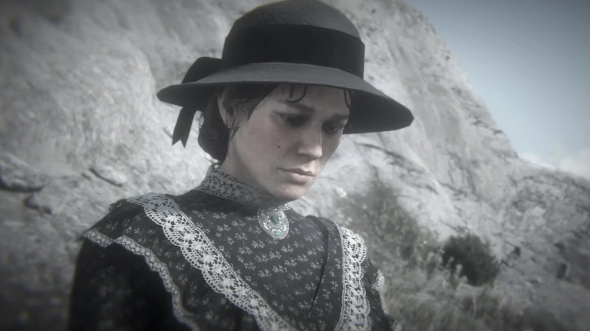
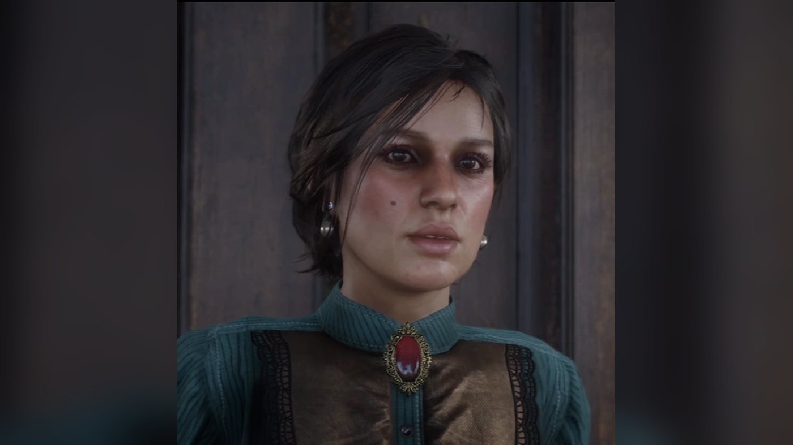
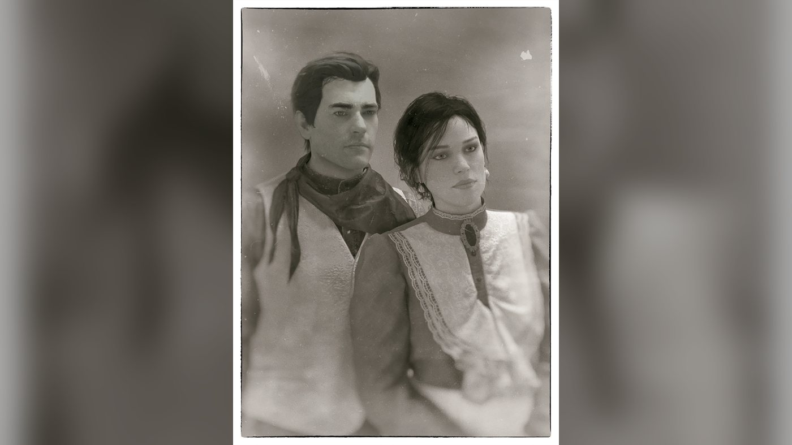
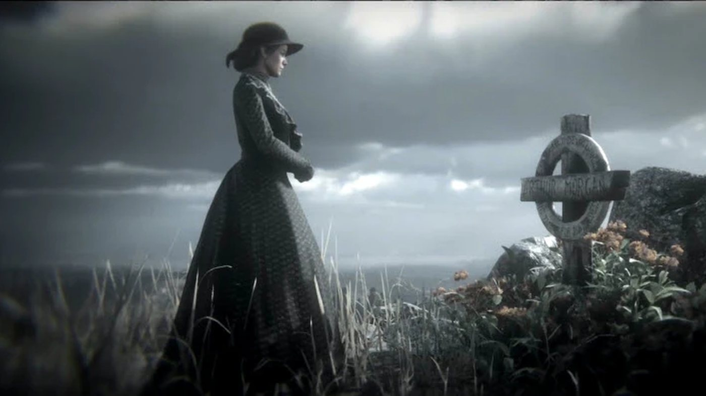

Personnage · Red Dead Redemption 2
Mary Linton
Mary Linton, née Mary Gillis, est un personnage secondaire de Red Dead Redemption 2 (2018), dont l'action se déroule en 1899. Elle a été fiancée à Arthur Morgan dans leur jeunesse, et les fiançailles ont pris fin des années avant le jeu. Elle a ensuite épousé Barry Linton, mort depuis. Au chapitre 2, elle écrit à Arthur depuis Valentine et lui demande de ramener son frère Jamie de chez les Chéloniens, une secte. Au chapitre 4, elle sollicite son aide à Saint-Denis au sujet de son père. Au chapitre 6, sa dernière lettre renvoie à Arthur la bague de fiançailles qu'il lui avait offerte. Pendant le générique de fin, on la voit sur la tombe d'Arthur.
Elle est interprétée par Julie Jesneck.
- Nom
- Mary Linton
- Nom de naissance
- Mary Gillis
- Naissance
- Non précisée dans le jeu
- Statut
- En vie ; aperçue sur la tombe d'Arthur pendant le générique de fin
- Nationalité
- Non précisée dans le jeu (américaine selon le Red Dead Wiki)
- Famille
- M. Gillis (père), sa mère (décédée), Jamie Gillis (petit frère), Barry Linton (mari, décédé)
- Ancien fiancé
- Arthur Morgan
- Jeux
- Red Dead Redemption 2
- Interprète
- Julie Jesneck
Biographie
Origines
Le jeu ne donne ni la date ni le lieu de naissance de Mary, pas plus que son âge. Son père est Mr. Gillis, et son frère cadet s'appelle Jamie Gillis. Sa mère est morte avant 1899 ; elle avait offert à Mary une broche, qui compte au chapitre 4. Jeune femme, Mary se fiance avec Arthur Morgan, qui fait déjà partie de la bande de Van der Linde. Arthur s'entend bien avec Jamie, à qui il apprend à monter à cheval. Les Gillis voient ces fiançailles d'un mauvais œil, à commencer par le père.
Les fiançailles prennent fin avant 1899, Arthur refusant de renoncer à la vie de hors-la-loi. Mary épouse ensuite un certain Barry Linton. Il meurt d'une pneumonie, et Mary est veuve en 1899. Entre-temps, sa famille s'est désagrégée. Jamie est entré chez les Chéloniens, une secte religieuse. D'après le Red Dead Wiki, son père s'est renfermé et s'en prend verbalement à ses enfants. Il boit, joue, paie des prostituées et a commencé à vendre ce que possède la famille.
Red Dead Redemption 2 (1899)
Dans Red Dead Redemption 2, Mary apparaît au fil de deux séries de missions facultatives confiées à Arthur, "We Loved Once and True" au chapitre 2 et "Fatherhood and Other Dreams" au chapitre 4, ainsi que dans trois lettres. Dans chaque série, le joueur peut accepter ou refuser de l'aider, et ses deuxième et troisième lettres changent selon ces choix.
Chapitre 2 : Horseshoe Overlook
Dans "We Loved Once and True I", Susan Grimshaw remet à Arthur une lettre de Mary au camp de Horseshoe Overlook. Mary y écrit qu'elle a recommencé sa lettre "cent fois ou plus". Elle rappelle que, la dernière fois qu'ils se sont parlé, elle partait se marier et lui avait dit qu'ils ne se reverraient plus. Elle vit à Valentine depuis quelques mois, à la suite de revers qu'elle ne détaille pas. Elle a croisé en ville quelques-unes des filles qui accompagnaient Arthur et entendu parler d'un homme qui lui ressemblait. Elle demande à le revoir et donne son adresse : une chambre louée à Chadwick Farm, au nord de Valentine.
D'après le Red Dead Wiki, Arthur s'étonne qu'elle lui écrive encore après tant d'années de séparation, et la lettre le laisse songeur. S'il l'a lue avant le début de "Money Lending and Other Sins III", Leopold Strauss lui demande si tout va bien ; Arthur répond qu'il avait la tête ailleurs, et Strauss l'envoie chez Thomas Downes. Dans "We Loved Once and True II", Arthur se rend à Chadwick Farm. Une femme plus âgée, Miss Chadwick, lui ouvre une arme à la main, puis rentre prévenir Mary. Mary apprend à Arthur que son mari est mort. Elle lui demande de retrouver Jamie, entré chez les Chéloniens dans la Cumberland Forest ; elle tient ces gens pour des fous et craint pour la vie de son frère.
Mary doit insister pour qu'il accepte de l'écouter, et elle lui avoue penser souvent à lui (ses mots sont cités dans la rubrique Personnalité). Le joueur fait son choix. Si Arthur refuse, il lui dit qu'au vu de leur passé, elle ferait mieux de trouver quelqu'un d'autre ; d'après le Red Dead Wiki, Mary répond qu'elle comprend, qu'il lui manque et qu'il doit prendre soin de lui. Si le joueur laisse filer le temps sans répondre, Mary rentre furieuse en lui lançant qu'il n'a pas changé, et la troisième partie devient inaccessible.
Si Arthur accepte, "We Loved Once and True III" prend le relais. Il trouve Jamie parmi les Chéloniens et passe leur chef, soit en le convainquant, soit en l'étranglant jusqu'à l'évanouissement. Jamie s'enfuit, tombe de cheval et se retrouve séparé d'Arthur par un train en marche ; il pointe alors un revolver sur sa propre tête, et Arthur lui fait sauter l'arme des mains d'une balle. Arthur le ramène à la gare de Valentine, où Jamie annonce à sa sœur qu'il rentre à la maison. D'après le Red Dead Wiki, Mary remercie Arthur de son aide. Avant de monter dans le train avec son frère, elle lui dit qu'il ne changera jamais. Toujours selon le wiki, Arthur reconnaît ensuite qu'elle le rend à la fois heureux et ridicule, et qu'il est incapable de lui dire non. Il dessine leurs initiales dans son journal, séparées par un cœur.
Chapitre 4 : Saint-Denis
Une deuxième lettre de Mary parvient à Arthur au chapitre 4. Son début dépend du chapitre 2. S'il l'a aidée, elle le remercie d'avoir sauvé la vie de Jamie et écrit que son frère songe à reprendre ses études, même s'il se dispute toujours avec "Daddy". S'il a refusé, elle reconnaît qu'il avait peut-être raison et que l'affaire de Jamie s'est plus ou moins arrangée. S'il a accepté puis échoué, elle écrit que Jamie a peut-être échappé seul aux Chéloniens. Dans les deux versions où il avait accepté, elle lui demande pourquoi il n'a pas su renoncer aux chimères qui brouillent son jugement. Toutes les versions disent qu'elle a gâché sa vie et que les siens et elle se retrouvent de nouveau dans le pétrin, sans que ce soit sa faute, assure-t-elle. Elle loge à l'Hotel Grand de Saint-Denis et le supplie de venir, honteuse de le lui demander.
Dans "Fatherhood and Other Dreams", Arthur la retrouve à l'hôtel. Elle lui demande de l'aider avec son père. Arthur refuse d'abord ; d'après le Red Dead Wiki, Mr. Gillis et lui ne se supportent pas. Mary tente de défendre son père et, toujours selon le wiki, assure qu'il n'a pas toujours été ainsi. Arthur lui rétorque en énumérant ce qu'est devenue sa respectable famille : un fils dans une secte, un père qui boit et qui joue, une fille qui supplie un hors-la-loi de l'aider. Le wiki lui prête aussi ces mots sur Mr. Gillis : une brute et un lâche. Le joueur tranche alors. S'il refuse, la série s'arrête là. Si Arthur cède, il la conduit aux écuries où se trouve son père. Pendant que Mary entre, un jeune homme qui balaie le trottoir somme Arthur de circuler, et Arthur le menace. Mr. Gillis ressort en reprochant à sa fille de l'avoir suivi, puis s'éloigne ; d'après le Red Dead Wiki, il est surpris de la voir et furieux de trouver Arthur avec elle.
Mary et Arthur le suivent et le voient vendre à un usurier nommé Ashton la broche que sa mère avait offerte à Mary ; Gillis décline le prêt que lui propose Ashton. Mary affronte son père pendant qu'Arthur part à la poursuite d'Ashton. Il rattrape la diligence à cheval, saute à bord, jette le cocher à terre et la conduit dans le marais du Bayou Nwa. Là, il peut payer 100 $ pour la broche, frapper Ashton jusqu'à ce qu'il la rende, ou le tuer. À son retour, Arthur trouve Mary assise seule dans la ruelle. Son père est parti, et elle refuse qu'Arthur aille le chercher : peu lui importe désormais où il est passé.
Arthur lui rend la broche, et tous deux marchent vers l'arrêt du tramway. En chemin, Mary lui propose une sortie au théâtre, en amis ; le joueur peut accepter ou refuser. S'il accepte, ils prennent des billets au Théâtre Râleur, assistent à plusieurs numéros, puis gagnent l'arrêt du tramway. Là, Mary évoque le tour qu'a pris sa vie, demande s'il est trop tard pour eux deux et lui propose de partir avec elle. Arthur répond qu'il le voudrait, mais qu'il est recherché et la mettrait en danger, que des gens du gang comptent sur lui et qu'il leur faudrait de l'argent. Il promet que cette vie touche à sa fin et qu'il la rejoindra une fois ses affaires réglées. Ils se séparent et ne se reverront plus.
Chapitre 5 : Guarma
Au retour de Guarma, dans "A Fork in the Road", un médecin de Saint-Denis annonce à Arthur qu'il a la tuberculose. En sortant du cabinet, Arthur entend des phrases prononcées plus tôt dans l'histoire, qui dépendent de son honneur. Avec un honneur élevé, Mary lui répète qu'elle pense souvent à lui ; avec un honneur bas, elle lui demande de ne pas l'obliger à supplier (voir la rubrique Personnalité).
Chapitre 6 : Beaver Hollow
À la fin de "Goodbye, Dear Friend", la mission où Colm O'Driscoll est pendu à Saint-Denis, Tilly Jackson remet à Arthur, à Beaver Hollow, une dernière lettre de Mary. Elle contient la bague qu'Arthur lui avait offerte dans leur jeunesse et une photographie d'eux deux. Le début de la lettre dépend du chapitre 4. Si Arthur l'a aidée, elle écrit qu'il n'est jamais venu. S'il a ignoré sa lettre de Saint-Denis, elle juge stupide d'avoir de nouveau fait appel à lui et promet que cela ne se reproduira pas. S'il a refusé de l'aider avec son père, elle s'excuse de le lui avoir demandé. Dans toutes les versions, elle a lu dans les journaux ce qu'il fait, et elle doute que la lettre lui parvienne.
Mary écrit qu'il lui manquera toujours, mais qu'elle ne peut pas vivre comme lui et qu'il ne sait pas vivre autrement. Auprès de lui, le monde a un sens ; loin de lui, elle voit bien que nul ne s'échappe de son monde à lui. Elle lui demande pardon pour tout, pour ce qui s'est passé il y a longtemps comme pour avoir tout recommencé. Elle écrit qu'il y a en lui un homme bon, aux prises avec un géant qui l'emporte chaque fois (les deux phrases sont citées dans la rubrique Citations). Dans les versions où Arthur l'a aidée ou a refusé de l'aider avec son père, elle ajoute qu'il lui a de nouveau brisé le cœur, qu'elle craint d'avoir brisé le sien et qu'il doit désormais la laisser partir. Elle lui rend la bague parce qu'elle y tient trop et qu'elle lui rappelle trop Arthur. Elle espère qu'il trouvera des amoureux à qui elle servira, et qu'en la lui rendant elle sera enfin libre. Elle conclut d'un simple "Goodbye".
Mary revient encore deux fois avant la mort d'Arthur. Si le joueur a terminé la mission facultative "Of Men and Angels" et que l'honneur d'Arthur est élevé, Arthur croise sœur Calderón à la gare d'Emerald à la fin de "The Fine Art of Conversation". D'après le Red Dead Wiki, il lui parle d'une fille qui l'aimait et dit regretter de ne pas être parti avec elle. Dans la dernière mission, "Red Dead Redemption", des phrases de l'histoire reviennent à Arthur pendant qu'il chevauche vers le camp. Avec un honneur élevé, l'une d'elles est la phrase de Mary sur l'homme bon aux prises avec un géant ; avec un honneur bas, celle sur ce monde dont on ne s'échappe pas. Plus tard dans la mission, quelle que soit la fin, Arthur donne son chapeau et sa sacoche à John Marston.
Épilogue (1907) et générique de fin
Épilogue 2 : Beecher's Hope
Mary n'apparaît pas dans l'épilogue de 1907, mais sa bague, si : John a désormais en sa possession la bague et la photographie. Dans "A Really Big Bastard", il confie à Sadie Adler qu'il compte demander Abigail en mariage avec la bague qu'Arthur avait autrefois offerte à Mary. D'après la page de la mission "A New Future Imagined", John tient la photographie d'Arthur et de Mary jeunes au moment où il prend la bague, au début de la mission. Ce jour-là, il fait sa demande à Abigail sur le lac de Blackwater, et elle accepte.
Générique de fin
On revoit Mary une dernière fois dans le générique de fin, qui suit la dernière mission de l'épilogue. Vêtue de noir, elle se tient près de la tombe d'Arthur et essuie une larme sans un mot. La tombe est fleurie si Arthur a terminé le chapitre 6 avec un honneur élevé, nue si son honneur était bas. Le jeu ne montre pas comment elle a appris sa mort, ne date pas la scène et ne dit rien de ce qu'elle devient ensuite.
Personnalité
Les descriptions de personnages publiées par Rockstar en septembre 2018 portent sur les membres du gang Van der Linde, et Mary n'en fait pas partie.
Dans ses propres mots
À Chadwick Farm, comme Arthur rechigne à l'écouter, elle lui dit : "Don't make me beg you, Arthur." (ne m'oblige pas à te supplier, Arthur). Quand elle lui demande de retrouver son frère, elle ajoute : "I understand if you don't wanna help me, but... but... I think of you often." (je comprends que tu ne veuilles pas m'aider, mais... mais... je pense souvent à toi). Avant de monter dans le train avec Jamie, à la fin de "We Loved Once and True III", elle lui lance : "I've... You're... Oh, you'll never change. I know that." (j'ai... tu es... oh, tu ne changeras jamais, je le sais bien).
Pendant qu'ils suivent son père dans les rues de Saint-Denis, dans "Fatherhood and Other Dreams", elle fait une remarque sur l'allure d'Arthur, d'après la page de la mission. S'il pèse plus que son poids idéal, elle lui trouve bonne mine et se souvient qu'il était autrefois tout maigre. Sinon, elle lui dit qu'il a l'air sale, aussi propre soit-il.
Noms
Elle est née Mary Gillis, nom de son père et de son frère Jamie. Linton est son nom d'épouse, celui de son mari, Barry Linton. Elle signe sa première lettre "Mary Linton", les suivantes simplement "Mary", le prénom qu'emploie aussi Arthur.
Apparence
Mary a les cheveux longs, châtain foncé, les yeux bruns et un grain de beauté sur la joue droite. À Chadwick Farm, ses cheveux sont tressés bas sur la nuque ; ensuite, elle les relève en chignon bas. Sur la tombe d'Arthur, pendant le générique de fin, elle est en tenue de deuil, coiffée d'un chapeau noir.
Relations

Arthur Morgan
Arthur et Mary se sont fiancés jeunes ; les fiançailles ont pris fin avant 1899. En 1899, elle lui demande deux fois son aide, d'abord pour son frère, puis pour son père, et sa dernière lettre lui rend la bague qu'il lui avait offerte (voir la biographie).
Mr. Gillis
Mr. Gillis est le père de Mary ; sa déchéance et la vente, à Saint-Denis, de la broche de sa défunte épouse sont racontées dans la biographie. Le Red Dead Wiki attribue sa voix à Robert Newman.
Jamie Gillis
Son petit frère a rejoint les Chéloniens, une secte, quand Mary demande à Arthur de le ramener (voir la biographie). Sa deuxième lettre donne de ses nouvelles (voir la biographie). Le Red Dead Wiki attribue sa voix à Adrian Enscoe.
Barry Linton
Mary l'a épousé après la rupture de ses fiançailles avec Arthur. Il est mort d'une pneumonie avant 1899 (voir la biographie).
Mrs. Gillis
Sa mère est morte avant 1899, et le jeu ne donne jamais son prénom. C'est elle qui avait donné à Mary la broche que M. Gillis vend à Saint-Denis (voir la biographie).

Susan Grimshaw
Susan annonce à Arthur qu'une lettre de Mary est arrivée (voir la biographie). D'après le Red Dead Wiki, elle dit n'avoir jamais aimé Mary, ce qui agace Arthur.

Tilly Jackson
Tilly remet à Arthur la dernière lettre de Mary à Beaver Hollow, à la fin de "Goodbye, Dear Friend" (voir la biographie). D'après le Red Dead Wiki, elle lui dit que Mary n'en vaut pas la peine.

Mary-Beth Gaskill
Au début de "No, No and Thrice, No", Arthur peut parler de Mary, et Mary-Beth lui répond qu'en ce cas, Mary était bien sotte (voir les Citations). D'après le Red Dead Wiki, Mary-Beth évoque aussi Mary dans des conversations en tête à tête avec Arthur à Horseshoe Overlook et à Beaver Hollow.

Karen Jones
D'après le Red Dead Wiki, Karen demande à Arthur s'il va se remettre avec Mary, et il répond qu'il est trop tard.

Abigail Marston
D'après le Red Dead Wiki, Abigail, contrairement à Susan, Tilly et Mary-Beth, dit avoir toujours apprécié Mary. Une note de la page du wiki consacrée à Arthur Morgan rapporte aussi qu'elle se souvient d'Arthur et de Mary jouant ensemble aux dominos. En 1907, John la demande en mariage avec la bague qu'Arthur avait autrefois offerte à Mary (voir la biographie).

John Marston
D'après le Red Dead Wiki, John parle de Mary une fois, pendant une dispute avec Arthur sur leurs vies respectives, dans "The Sheep and the Goats".

Leopold Strauss
Au début de "Money Lending and Other Sins III", Strauss remarque qu'Arthur a l'esprit ailleurs après la lecture de la première lettre de Mary (voir la biographie).
Miss Chadwick
En 1899, Mary loue une chambre à Chadwick Farm, près de Valentine, où Miss Chadwick accueille Arthur sur le pas de la porte (voir la biographie).
Ashton
Cet usurier de Saint-Denis achète à M. Gillis la broche de la mère de Mary, et Arthur la lui reprend (voir la biographie).
Sister Calderón
Arthur lui parle de Mary à la gare d'Emerald, dans "The Fine Art of Conversation" (voir la biographie).
Missions
Mary confie à Arthur deux séries de missions facultatives, qu'il est possible de manquer : "We Loved Once and True" au chapitre 2 et "Fatherhood and Other Dreams" au chapitre 4. Les terminer compte parmi les missions d'honneur exigées pour le trophée Lending a Hand. En dehors de ces missions, on l'entend à travers ses lettres et les répliques dont Arthur se souvient, et on la revoit une fois dans le générique de fin.
Apparitions
| Mission | Chapitre | Rôle de Mary |
|---|---|---|
| We Loved Once and True I | 2. Horseshoe Overlook | Voix seulement. Sa première lettre parvient à Arthur par l'intermédiaire de Susan. |
| We Loved Once and True II | 2. Horseshoe Overlook | Reçoit Arthur à Chadwick Farm et lui demande de ramener son frère Jamie, parti chez les Chéloniens. |
| We Loved Once and True III | 2. Horseshoe Overlook | Retrouve Arthur et Jamie à la gare de Valentine et repart en train avec son frère. |
| Fatherhood and Other Dreams I | 4. Saint-Denis | Voix seulement. Sa deuxième lettre appelle Arthur à l'Hotel Grand de Saint-Denis. |
| Fatherhood and Other Dreams II | 4. Saint-Denis | Suit son père avec Arthur et récupère la broche de sa mère. Peut aller au théâtre avec lui ; dans ce cas, elle lui propose, à l'arrêt du tramway, de partir avec elle. |
| A Fork in the Road | 5. Guarma | Voix seulement. L'une de ses répliques revient à Arthur après le diagnostic, selon son honneur. |
| Goodbye, Dear Friend | 6. Beaver Hollow | Voix seulement. Sa lettre d'adieu, avec la bague et une photographie, est remise à Arthur par Tilly. |
| The Fine Art of Conversation | 6. Beaver Hollow | Évoquée sans être nommée : Arthur parle d'elle à sœur Calderón (seulement après "Of Men and Angels" et avec un honneur élevé). |
| Red Dead Redemption | 6. Beaver Hollow | Voix seulement. Une phrase de sa lettre d'adieu revient à Arthur pendant sa dernière chevauchée. |
| End credits | Après l'épilogue 2 | Apparaît en deuil sur la tombe d'Arthur. |
Missions où elle est évoquée
| Mission | Chapitre | Lien avec Mary |
|---|---|---|
| Money Lending and Other Sins III | 2. Horseshoe Overlook | Si Arthur vient de lire sa première lettre, Strauss le trouve perdu dans ses pensées. |
| No, No and Thrice, No | 4. Saint-Denis | Arthur peut parler d'elle avec Mary-Beth au début de la mission. |
| A Really Big Bastard | Épilogue 2 | John confie à Sadie qu'il demandera Abigail en mariage avec la bague qu'Arthur avait offerte à Mary. |
| A New Future Imagined | Épilogue 2 | John demande Abigail en mariage avec sa bague. |
Citations
Les répliques ci-dessous sont citées dans leur version originale anglaise.
Mary
There's a good man within you... but he is wrestling with a giant.
La lettre d'adieu de Mary, telle qu'Arthur s'en souvient pendant sa dernière chevauchée si son honneur est élevé, Red Dead Redemption (RDR2, chapitre 6). Traduction : « Il y a un homme bon en toi... mais il lutte contre un géant. »I see clearly that your world is not a world from which one can escape.
La lettre d'adieu de Mary, telle qu'Arthur s'en souvient pendant sa dernière chevauchée si son honneur est bas, Red Dead Redemption (RDR2, chapitre 6). Traduction : « Je vois bien que ton monde n'est pas un monde dont on peut s'échapper. »
À propos de Mary
Well, she was a fool then, Arthur.
Mary-Beth à Arthur, au sujet de Mary, No, No and Thrice, No (RDR2, chapitre 4). Arthur se souvient de cette phrase dans A Fork in the Road si son honneur est élevé. Traduction : « Eh bien, dans ce cas, c'était une idiote, Arthur. »
Conception et interprétation
Le casting
Mary est interprétée par Julie Jesneck, que le Red Dead Wiki et la liste des personnages du jeu sur Wikipédia créditent dans ce rôle.
La dernière scène de Mary, sa visite sur la tombe d'Arthur pendant le générique de fin, ne comporte aucun dialogue. Roger Clark, l'interprète d'Arthur, a expliqué à IGN que Jesneck n'était pas disponible pour cette scène et qu'il a donc joué lui-même les gestes de Mary en capture de mouvement ; une scène sans dialogue, précise-t-il, peut être tenue par un autre acteur (propos rapportés par Juan Sanmartín dans Vida Extra le 26 novembre 2024).
Contenu coupé
Les fichiers du jeu gardent la trace d'une rencontre inutilisée entre Arthur et Mary au saloon de Rhodes, où elle a loué une chambre, d'après la page du Red Dead Wiki consacrée au contenu coupé. Ses textes et ses animations sont classés sous les étiquettes "MRY2" et "FLME". Une lettre inutilisée restée dans les fichiers montre Mary demandant à Arthur de venir l'aider à Rhodes, et le texte restant lui fait dire que les gens qu'elle fuit risquent de la tuer s'il ne l'aide pas. D'après le wiki, un modèle de personnage nommé "rflme_debt_man" laisse penser que ces hommes venaient réclamer une dette. Les fichiers contiennent aussi un Chélonien inutilisé prévu pour "We Loved Once and True" et deux chapeaux inutilisés pour Mary.
Deux personnages coupés portent des vêtements identiques ou proches des siens. La nièce de Leon Fuentes, qu'Arthur et Bill devaient secourir à Guarma, porte le même modèle de robe et les mêmes textures que Mary, ainsi qu'un chapeau de deuil presque identique au sien, voilette en plus. La tenue de deuil de Mary reprend en retour la coiffure de cette nièce. Un personnage baptisé "Gunslinger's Widow" (la veuve du pistolero) dispose de cheveux, de bottes et d'un chapeau de deuil proches de ceux de Mary. Dans les fichiers, son père s'appelle "Mr. Linton" et non M. Gillis, et son frère Jamie est lui aussi désigné sous le nom de Linton.
Autres médias et postérité
Mary Linton n'existe que dans Red Dead Redemption 2 (2018). Elle n'apparaît pas dans Red Dead Redemption (2010), qui se déroule en 1911, et le Red Dead Wiki ne la recense dans aucun autre jeu, Red Dead Online compris.
Anecdotes
- Pendant l'entrevue de Chadwick Farm, Arthur ôte son chapeau et le garde à la main s'il en porte un, puis le remet à la fin de la conversation.
- Les objectifs de la médaille d'or de "We Loved Once and True III" consistent à convaincre les Chéloniens de laisser partir Jamie sans violence et à le ramener à Mary en moins de deux minutes.
- Payer à Ashton les 100 $ qu'il demande pour la broche de Mary fait monter l'honneur d'Arthur ; le frapper jusqu'à ce qu'il la rende n'en rapporte pas, et le tuer le fait baisser.
- Emmener Mary au théâtre fait partie des objectifs de la médaille d'or de "Fatherhood and Other Dreams", avec le fait de rattraper le chariot d'Ashton et de le conduire à l'endroit isolé en moins d'1 minute 45.
- Les trois lettres de Mary et la photographie "Young Mary & Arthur Photograph" figurent parmi les documents de Red Dead Redemption 2 : la première peut être récupérée dans la tente d'Arthur au chapitre 2, la deuxième dans sa chambre au chapitre 4.
Galerie


